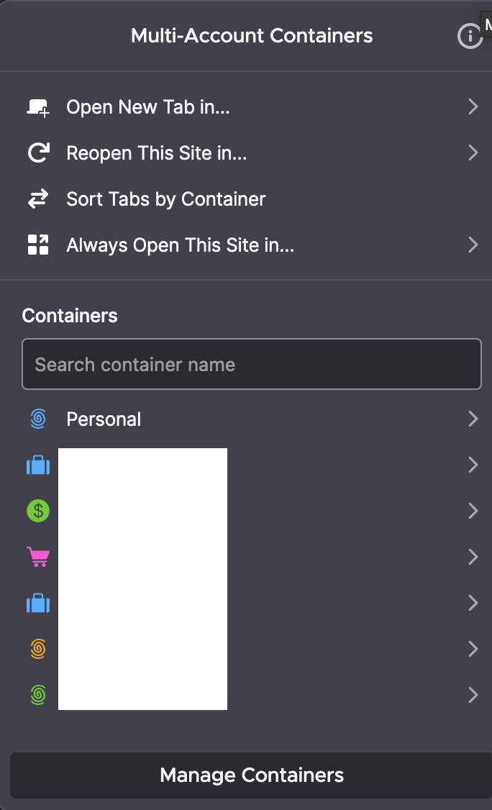
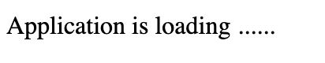
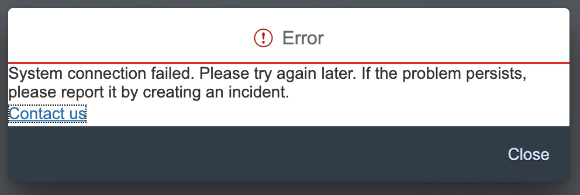
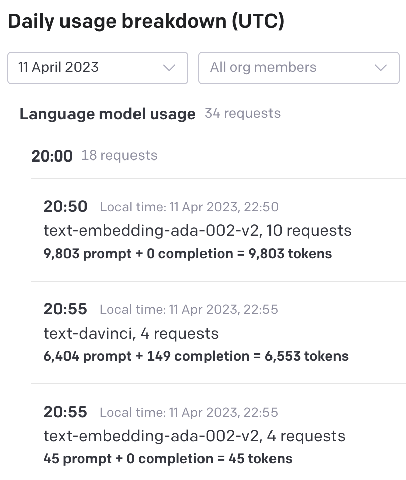

Gregor Wolf
WIP: ChatGPT with
SAP Best Practice Content
Before we start
a big thank you to:
-
Sascha Seegebarth for
the BTP regular table and the BTPcon - All participants, BTPcon speakers
- Sponsors Inwerke and WSN Technologies
SAP Influencing
BTP Opportunities
You have more than one S-user
Uses Browser Profile (Chrome/Edge)
or Multi Account Containers (Firefox)

Why?
ChatGPT with SAP Best Practice Content
- SAP S/4HANA implementation
- Supporting Business Process Experts
Terms
LLM
Large Language Model
Terms
GPT
Generative Pre-trained Transformer
Terms
Embeddings
Measure the similarity of text strings.
The model text-embedding-ada-002
has 1536 dimensions
Cost of OpenAI API: $0.0004 / 1K tokens
Blog Post: New and improved embedding model
Terms
Tokens
Tokens are common sequences of characters found in text. The models understand the statistical relationships between these tokens, and excel at producing the next token in a sequence of tokens. (https://platform.openai.com/tokenizer)
Challenges with ChatGPT
- does not contain the current SAP Best Practice
- Cost based on the number of tokens. 75 English words correspond to approximately 100 tokens
- the prompt of text-davinci-003 has a token limit of 4000
Solution: Context Injection
Data Retrieval
SAP Best Practices Explorer

Data Retrieval
SAP Cloud ALM
Thanks to a conversation with
Riccardo Escher
I found this way:
- Solution Process Scope
- → OData Service
- → CAP Application
- → 558 HTML files with SAP Best Practice content for S/4HANA on Premise 2022
Data Retrieval
Demo CAP App
- Test OData Endpoints with REST Client
- Mock OData Endpoints
- CAP Action Implementation
Learn more: SAP Code Jam Service Integration with SAP Cloud Application Programming Model
Saturday, 8th July 2023 after reCAP 2023 with DJ Adams.
Getting Started with ChatGPT
Jupyter Notebook
- Preparation: API Keys
- Demo
Getting Started with ChatGPT
Costs

Thank you very much
Your questions...
Contact
Gregor Wolf,
Computer Service Wolf
gregor@computerservice-wolf.com
Twitter:
@wolf_gregor
| Presentation | Business Card | ||
|---|---|---|---|

|